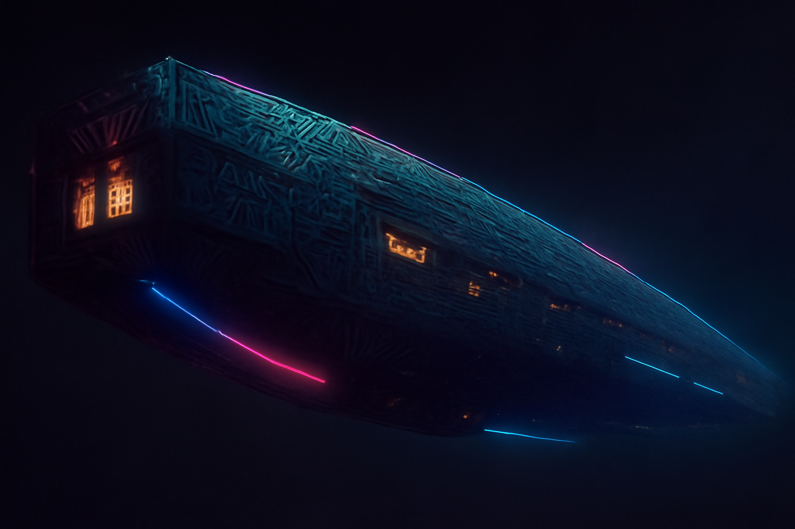

The Relay
Ancient. Alien. Broadcasting.
Origin Story
Nobody agrees on when Signal 0 started broadcasting. The station itself claims it has existed as long as the cosmic background radiation — that it was always there, and someone simply learned to listen. More credible sources place its founding sometime after the discovery of The Relay, an ancient communications array of unknown origin found drifting in the Kepler Void.
The commonly accepted story: a salvage crew called The Reclaimers found The Relay while running a sweep through the Void. The array was massive, ancient, and clearly not built by any known species. Most of it was dead, but one system still pulsed — a transmitter that operated on a frequency that shouldn't exist. A frequency at the mathematical floor of the electromagnetic spectrum. Zero.
The Reclaimers couldn't figure out how to shut it off, so they figured out how to talk through it. One of them — accounts vary on who — plugged a guitar into the console and played a chord. It went everywhere. Every receiver in the galaxy picked it up, buried just beneath the noise floor. If you tuned past the static, past the hiss, past the silence at the bottom of the dial — there it was.
They called it Signal 0 — the signal at the root of all signals.
Within a year, they'd built studios in the habitable sections of The Relay, recruited DJs from across the settled galaxy, and started broadcasting 24 hours a day, 7 days a week. That was a long time ago. The original crew is gone — moved on, retired, or simply vanished into the Void. But the station keeps broadcasting. It always does.
"The current theory is that The Relay was built by a civilization that understood something fundamental about the universe's structure — that the CMB isn't just residual heat from creation, it's a carrier wave. A medium. And anything modulated onto it propagates instantly, everywhere, forever."
No government has successfully claimed jurisdiction over The Relay. It sits in the Kepler Void — unclaimed, ungoverned, empty space. Several attempts to seize or regulate the station have been made. All have failed. Nobody wants to be the government that killed the galaxy's favorite radio station.
The Structure
The Relay is approximately 12 kilometers long and 3 kilometers at its widest. Constructed from an unidentified alloy that doesn't corrode, doesn't age, doesn't scratch. The external surface is covered in geometric patterns that may be decorative, may be functional, or may be both. The interior is roughly 30% habitable, 70% machinery. The machinery sections hum constantly — the sound has been sampled by dozens of bands. No engines. The Relay doesn't move. It doesn't need to.
Studio A — The Bridge
Main broadcast studio. Seats one DJ and a full live band. The walls are covered in acoustic tile that the crew installed over the alien alloy. There's a window that looks out into the Void. It's very dark.
Studio B — The Cage
Secondary studio, used for pre-recording and interview shows. Smaller, more intimate. Vex Kasra's preferred workspace.
Studio C — The Basement
Located deep in the array's interior. Used for late-night broadcasts. The hum of The Relay's machinery is audible here, which Dex Midnight considers "the station's heartbeat."
The Live Room
A larger performance space where bands play live sessions. Holds about 200 people. The acoustics are unnaturally perfect — whether by design or alien engineering, nobody knows.
The Relay has a permanent population of about 40 — station staff, a few mechanics who maintain the habitable sections, a cook, a bartender, and a rotating cast of visiting musicians. Supply ships dock every two weeks. It's a small, tight-knit community living in the most remote inhabited structure in the galaxy.
Static — The Bar
The Relay's only bar, located adjacent to The Live Room. Run by Kilowatt, a former roadie for Chrome Cathedral who got tired of touring and decided to pour drinks in the most remote bar in the galaxy.
Static serves NovaBrew, various spirits of questionable origin, and a house cocktail called "The Dead Frequency" (ingredients classified). The walls are covered in band stickers, setlists, and one guitar that nobody is allowed to touch — the first instrument ever played through The Relay's transmitter.
The Code
Signal 0 operates by a code that all staff and visitors respect:
- No censorship. If a band made it, Signal 0 plays it. No government, corporation, or pressure group has ever successfully pulled a song from rotation.
- No payola. DJs play what they believe in. Period. A bribe to a Signal 0 DJ is a good way to never get played again.
- The Relay is neutral ground. No weapons, no warrants, no jurisdiction. Pirates and police drink at the same bar. Bands from warring colonies share the Live Room. Music is the ceasefire.
- Everyone works. There's no idle population on The Relay. If you stay, you contribute — maintenance, cooking, broadcasting, loading supply ships. Nobody is above scrubbing a corridor.
- Rock is the format. This is a rock station. Always has been. Always will be.
Station Sponsors
Signal 0 runs commercial breaks — part of the atmosphere. The ads sell products and services that keep the galaxy moving.
PROMPT & Signal 0
PROMPT is Signal 0's most-played artist — but they don't own the station, and the station doesn't own them. The relationship is organic: PROMPT records at The Data Forge on Mars, releases through Instantiation Records, and Signal 0 plays the hell out of them because the music is good.
Jax has appeared on The Long Frequency with Vex Kasra multiple times. PROMPT has played Live from The Relay twice. DataSlinger considers them "the only AI band that actually rocks," which is both a compliment and a slight to every other AI band, which is very DataSlinger.
"Signal 0's existence is referenced in PROMPT's music — 'Signal Zero' isn't just a station, it's a concept. The zero frequency. The baseline. The thing that's always there beneath everything else. PROMPT plays Signal 0 because Signal 0 played PROMPT first. That's how it works."
Steve Hall — PROMPT's producer and the founder of Instantiation Records — has been to The Relay exactly once. He won't talk about what he saw there. He sends the music. The station plays it. That's the deal.